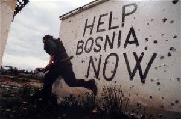

EU Flag, gold covered, and Canned beef—This is the ICAR Canned Beef Monument in Sarajevo.
So why would anyone build a monument for a beef can? And why do the residents in Sarajevo hate it so much?
In 1992, the former Yugoslavia country, Bosnia and Herzegovina, plunged into a civil war after the independence vote. The capital, Sarajevo experienced one of the cruelest sieges in modern history, with food shortages, power outages, and lack of access to water.
In order to prevent the situation from worsening, many supplies were sent by international organizations. One very common supply was canned beef, produced by a global livestock standards organization named ICAR.
However, there were some serious quality issues with these cans. Most were expired, some for over 20 years. Also, many of the cans were labeled as "beef" but contained pork, the consumption of which was extremely offensive for many in the Muslim population of the city at that time.
In 2007, the ICAR Canned Beef Monument was built as a dedication to this piece of [Bosnian] history, and the inscription, “the grateful citizen of Sarajevo are thankful for help from the international community”, is laced with humor that only people who know this history can understand.